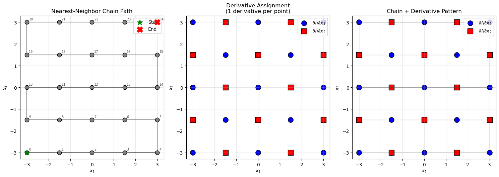
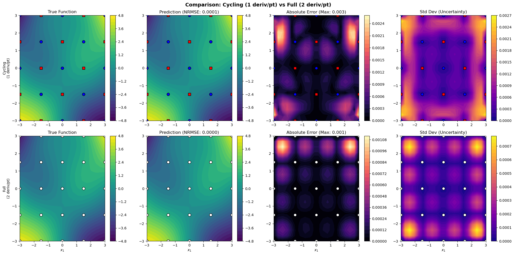

Cycling Spatial Derivative Strategy for DEGP#
This tutorial demonstrates a spatially-aware derivative assignment strategy for Derivative-Enhanced Gaussian Processes (DEGPs). Instead of providing all derivatives at every training point, we assign exactly one derivative per point, cycling through dimensions along a spatial chain.
This approach is useful for:
Reducing computational cost in high-dimensional problems.
Exploring trade-offs between derivative coverage and model accuracy.
Understanding how GP correlation structure propagates derivative information.
Motivation#
In high-dimensional problems, providing full derivative information at every training point can be computationally expensive. The covariance matrix size scales with the total number of observations, so reducing derivative observations can significantly improve training time and memory usage.
Key insight: Gaussian Processes have a correlation structure that allows nearby points to share information. If neighboring points have complementary derivative information, the GP may be able to “fill in” the missing derivatives through spatial correlation.
The Strategy#
The cycling derivative strategy works as follows:
Build a spatial chain: Connect training points via a nearest-neighbor path
Cycle derivatives along the chain: Assign derivatives in a repeating pattern
For a 2D problem:
Position 0, 2, 4, … → ∂f/∂x₁
Position 1, 3, 5, … → ∂f/∂x₂
This ensures that adjacent points in the chain have different derivative information, maximizing the complementary coverage.
Setup#
We begin by importing all necessary libraries, including pyoti for hypercomplex
AD, full_degp for DEGP modeling, and standard scientific Python packages.
import numpy as np
import pyoti.sparse as oti
from jetgp.full_degp.degp import degp
import jetgp.utils as utils
from matplotlib import pyplot as plt
Configuration#
We explicitly define all configuration parameters as simple variables. This includes the dimensionality of the input space, grid size, kernel type, and other hyperparameters.
n_bases = 2
n_order = 1 # First-order derivatives only
grid_size = 5 # 5x5 grid = 25 points
test_resolution = 20
lower_bounds = [-3.0, -3.0]
upper_bounds = [3.0, 3.0]
normalize_data = True
kernel = "SE"
kernel_type = "anisotropic"
random_seed = 42
np.random.seed(random_seed)
True Function#
We use a 2D function with interesting structure that benefits from derivative information:
def true_function(X, alg=np):
"""
2D test function:
f(x1, x2) = sin(x1) * cos(x2) + 0.5 * x1 * x2
"""
x1, x2 = X[:, 0], X[:, 1]
return alg.sin(x1) * alg.cos(x2) + 0.5 * x1 * x2
Spatial Chain Construction#
The spatial chain connects training points via a greedy nearest-neighbor traversal. Starting from point 0, we iteratively add the nearest unvisited point to form a connected chain that traverses the space smoothly.
def build_spatial_chain(X_train):
"""
Build a greedy nearest-neighbor chain through all training points.
"""
n_pts = len(X_train)
visited = [False] * n_pts
chain = [0]
visited[0] = True
for _ in range(n_pts - 1):
current = chain[-1]
dists = np.linalg.norm(X_train - X_train[current], axis=1)
dists[visited] = np.inf
nearest = np.argmin(dists)
chain.append(nearest)
visited[nearest] = True
return chain
Derivative Assignment#
Derivatives are assigned by cycling through dimensions based on chain position. Each point receives exactly one derivative observation.
def assign_cycling_derivatives(chain, n_bases=2):
"""
Assign derivatives cycling through dimensions along the chain.
For 2D:
- position 0, 2, 4, ... -> d/dx1
- position 1, 3, 5, ... -> d/dx2
"""
derivative_groups = [[] for _ in range(n_bases)]
for pos, pt_idx in enumerate(chain):
group = pos % n_bases
derivative_groups[group].append(pt_idx)
return derivative_groups
Training Data Generation#
We generate training points on a regular grid and evaluate the function with derivatives using automatic differentiation.
def generate_grid_points(grid_size, lower_bounds, upper_bounds):
"""Generate training points on a regular grid."""
x1 = np.linspace(lower_bounds[0], upper_bounds[0], grid_size)
x2 = np.linspace(lower_bounds[1], upper_bounds[1], grid_size)
X1_grid, X2_grid = np.meshgrid(x1, x2)
X_train = np.column_stack([X1_grid.ravel(), X2_grid.ravel()])
return X_train
def evaluate_function_with_derivatives(X_train, n_bases, n_order):
"""Evaluate function and all first-order derivatives at training points."""
X_train_pert = oti.array(X_train)
for i in range(n_bases):
X_train_pert[:, i] += oti.e(i + 1, order=n_order)
y_train_hc = true_function(X_train_pert, alg=oti)
y_values = y_train_hc.real
all_derivatives = {}
for i in range(n_bases):
all_derivatives[i + 1] = y_train_hc.get_deriv([[i + 1, 1]])
return y_values, all_derivatives
DEGP Setup Functions#
We define two setup functions: one for the cycling strategy (1 derivative per point) and one for the full strategy (all derivatives at all points) as a baseline.
Cycling Strategy#
def setup_cycling_degp(X_train, y_values, all_derivatives, derivative_groups):
"""
Set up DEGP with cycling derivative assignment.
Each point contributes exactly one derivative observation.
"""
# Function values at all points
y_train_list = [y_values.reshape(-1, 1)]
# Each derivative only at its assigned points
for i, group_pts in enumerate(derivative_groups):
var_idx = i + 1
y_train_list.append(all_derivatives[var_idx][group_pts].reshape(-1, 1))
# Derivative indices for first-order derivatives
der_indices = [
[[[1, 1]], [[2, 1]]]
]
# Specify which points have which derivatives
derivative_locations = [list(group) for group in derivative_groups]
return y_train_list, der_indices, derivative_locations
Full Strategy (Baseline)#
def setup_full_degp(X_train, y_values, all_derivatives):
"""
Set up DEGP with full derivatives at all points (baseline).
"""
n_pts = len(X_train)
all_points = list(range(n_pts))
y_train_list = [y_values.reshape(-1, 1)]
for i in range(1, 3):
y_train_list.append(all_derivatives[i].reshape(-1, 1))
der_indices = [
[[[1, 1]], [[2, 1]]]
]
derivative_locations = [all_points, all_points]
return y_train_list, der_indices, derivative_locations
Model Training#
We initialize the DEGP model and optimize its hyperparameters using PSO
optimization. The model incorporates both function values and selected
derivatives, with derivative_locations specifying where each derivative
is available.
def train_model(X_train, y_train_list, n_order, n_bases, der_indices,
derivative_locations, normalize_data, kernel, kernel_type):
"""Train DEGP model with PSO optimization."""
gp_model = degp(
X_train, y_train_list, n_order, n_bases,
der_indices,
derivative_locations=derivative_locations,
normalize=normalize_data,
kernel=kernel, kernel_type=kernel_type
)
params = gp_model.optimize_hyperparameters(
optimizer='pso',
pop_size=200,
n_generations=30,
local_opt_every=10,
debug=True
)
return gp_model, params
Interpolation Verification#
We verify that the model correctly interpolates training data, checking both function values and derivative values at their specified locations.
def verify_interpolation(gp_model, params, X_train, y_train_list,
derivative_locations, model_name="Model"):
"""Verify that the model correctly interpolates training data."""
print(f"\nInterpolation Verification for {model_name}")
print("-" * 50)
y_pred, _ = gp_model.predict(X_train, params, calc_cov=True, return_deriv=True)
all_passed = True
# Check function values
y_func_true = y_train_list[0].flatten()
y_func_pred = y_pred[0, :].flatten()
func_error = np.abs(y_func_pred - y_func_true)
func_max_err = np.max(func_error)
func_pass = func_max_err < 1e-4
all_passed = all_passed and func_pass
status = "✓" if func_pass else "✗"
print(f"{status} Function values: max_err = {func_max_err:.2e}")
# Check derivatives
derivative_names = ["∂f/∂x₁", "∂f/∂x₂"]
for i, (deriv_locs, name) in enumerate(zip(derivative_locations, derivative_names)):
y_deriv_true = y_train_list[i + 1].flatten()
y_deriv_pred = y_pred[i + 1, :].flatten()[deriv_locs]
deriv_error = np.abs(y_deriv_pred - y_deriv_true)
deriv_max_err = np.max(deriv_error)
deriv_pass = deriv_max_err < 1e-4
all_passed = all_passed and deriv_pass
status = "✓" if deriv_pass else "✗"
print(f"{status} {name} (n={len(deriv_locs):2d}): max_err = {deriv_max_err:.2e}")
print("-" * 50)
print(f"{'✓ ALL PASSED' if all_passed else '✗ SOME FAILED'}")
return all_passed
Evaluation#
We evaluate the model on a fine grid to assess prediction quality.
def evaluate_on_grid(gp_model, params, lower_bounds, upper_bounds, resolution):
"""Evaluate model on a fine grid."""
x1 = np.linspace(lower_bounds[0], upper_bounds[0], resolution)
x2 = np.linspace(lower_bounds[1], upper_bounds[1], resolution)
X1_grid, X2_grid = np.meshgrid(x1, x2)
X_test = np.column_stack([X1_grid.ravel(), X2_grid.ravel()])
y_pred, y_var = gp_model.predict(X_test, params, calc_cov=True)
y_true = true_function(X_test, alg=np)
return {
"X1_grid": X1_grid,
"X2_grid": X2_grid,
"y_true": y_true.reshape(X1_grid.shape),
"y_pred": y_pred.reshape(X1_grid.shape),
"y_var": y_var.reshape(X1_grid.shape),
"nrmse": utils.nrmse(y_true, y_pred)
}
Visualization#
We create visualizations to understand the derivative assignment pattern and compare model performance.
Derivative Assignment Visualization#
def visualize_derivative_assignment(X_train, chain, derivative_groups):
"""Visualize the chain and derivative assignments on the 2D grid."""
fig, axes = plt.subplots(1, 3, figsize=(15, 5))
colors = ['blue', 'red']
markers = ['o', 's']
labels = [r'$\partial f/\partial x_1$', r'$\partial f/\partial x_2$']
# Panel 1: Chain path
ax = axes[0]
chain_coords = X_train[chain]
ax.plot(chain_coords[:, 0], chain_coords[:, 1], 'k-', alpha=0.5, linewidth=1.5)
ax.scatter(X_train[:, 0], X_train[:, 1], c='gray', s=80, edgecolor='k', zorder=5)
ax.scatter(*X_train[chain[0]], c='green', s=150, marker='*', zorder=10, label='Start')
ax.scatter(*X_train[chain[-1]], c='red', s=150, marker='X', zorder=10, label='End')
for i, idx in enumerate(chain):
ax.annotate(str(i), X_train[idx] + np.array([0.1, 0.1]), fontsize=7, alpha=0.7)
ax.set_xlabel('$x_1$')
ax.set_ylabel('$x_2$')
ax.set_title('Nearest-Neighbor Chain Path')
ax.legend(loc='upper right')
ax.set_aspect('equal')
ax.grid(True, alpha=0.3)
# Panel 2: Derivative assignments
ax = axes[1]
for group, color, marker, label in zip(derivative_groups, colors, markers, labels):
ax.scatter(X_train[group, 0], X_train[group, 1],
c=color, s=120, edgecolor='k', marker=marker, label=label)
ax.set_xlabel('$x_1$')
ax.set_ylabel('$x_2$')
ax.set_title('Derivative Assignment\n(1 derivative per point)')
ax.legend(loc='upper right')
ax.set_aspect('equal')
ax.grid(True, alpha=0.3)
# Panel 3: Combined view
ax = axes[2]
chain_coords = X_train[chain]
ax.plot(chain_coords[:, 0], chain_coords[:, 1], 'k-', alpha=0.3, linewidth=1)
for group, color, marker, label in zip(derivative_groups, colors, markers, labels):
ax.scatter(X_train[group, 0], X_train[group, 1],
c=color, s=120, edgecolor='k', marker=marker, label=label)
ax.set_xlabel('$x_1$')
ax.set_ylabel('$x_2$')
ax.set_title('Chain + Derivative Pattern')
ax.legend(loc='upper right')
ax.set_aspect('equal')
ax.grid(True, alpha=0.3)
plt.tight_layout()
plt.show()
Results Comparison Visualization#
def plot_results_comparison(X_train, results_cycling, results_full, derivative_groups):
"""Compare cycling vs full derivative strategies."""
fig, axes = plt.subplots(2, 4, figsize=(20, 10))
colors = ['blue', 'red']
markers = ['o', 's']
# Row 1: Cycling strategy
im0 = axes[0, 0].contourf(results_cycling["X1_grid"], results_cycling["X2_grid"],
results_cycling["y_true"], levels=30, cmap="viridis")
for i, (group, color, marker) in enumerate(zip(derivative_groups, colors, markers)):
axes[0, 0].scatter(X_train[group, 0], X_train[group, 1],
c=color, s=60, edgecolor='k', marker=marker)
axes[0, 0].set_title("True Function")
axes[0, 0].set_ylabel("Cycling\n(1 deriv/pt)")
plt.colorbar(im0, ax=axes[0, 0])
im1 = axes[0, 1].contourf(results_cycling["X1_grid"], results_cycling["X2_grid"],
results_cycling["y_pred"], levels=30, cmap="viridis")
for i, (group, color, marker) in enumerate(zip(derivative_groups, colors, markers)):
axes[0, 1].scatter(X_train[group, 0], X_train[group, 1],
c=color, s=60, edgecolor='k', marker=marker)
axes[0, 1].set_title(f"Prediction (NRMSE: {results_cycling['nrmse']:.4f})")
plt.colorbar(im1, ax=axes[0, 1])
error_cycling = np.abs(results_cycling["y_true"] - results_cycling["y_pred"])
im2 = axes[0, 2].contourf(results_cycling["X1_grid"], results_cycling["X2_grid"],
error_cycling, levels=30, cmap="magma")
for i, (group, color, marker) in enumerate(zip(derivative_groups, colors, markers)):
axes[0, 2].scatter(X_train[group, 0], X_train[group, 1],
c=color, s=60, edgecolor='k', marker=marker)
axes[0, 2].set_title(f"Absolute Error (Max: {error_cycling.max():.3f})")
plt.colorbar(im2, ax=axes[0, 2])
im3 = axes[0, 3].contourf(results_cycling["X1_grid"], results_cycling["X2_grid"],
np.sqrt(results_cycling["y_var"]), levels=30, cmap="plasma")
for i, (group, color, marker) in enumerate(zip(derivative_groups, colors, markers)):
axes[0, 3].scatter(X_train[group, 0], X_train[group, 1],
c=color, s=60, edgecolor='k', marker=marker)
axes[0, 3].set_title("Std Dev (Uncertainty)")
plt.colorbar(im3, ax=axes[0, 3])
# Row 2: Full derivatives
im4 = axes[1, 0].contourf(results_full["X1_grid"], results_full["X2_grid"],
results_full["y_true"], levels=30, cmap="viridis")
axes[1, 0].scatter(X_train[:, 0], X_train[:, 1], c='white', s=60, edgecolor='k')
axes[1, 0].set_title("True Function")
axes[1, 0].set_ylabel("Full\n(2 deriv/pt)")
axes[1, 0].set_xlabel("$x_1$")
plt.colorbar(im4, ax=axes[1, 0])
im5 = axes[1, 1].contourf(results_full["X1_grid"], results_full["X2_grid"],
results_full["y_pred"], levels=30, cmap="viridis")
axes[1, 1].scatter(X_train[:, 0], X_train[:, 1], c='white', s=60, edgecolor='k')
axes[1, 1].set_title(f"Prediction (NRMSE: {results_full['nrmse']:.4f})")
axes[1, 1].set_xlabel("$x_1$")
plt.colorbar(im5, ax=axes[1, 1])
error_full = np.abs(results_full["y_true"] - results_full["y_pred"])
im6 = axes[1, 2].contourf(results_full["X1_grid"], results_full["X2_grid"],
error_full, levels=30, cmap="magma")
axes[1, 2].scatter(X_train[:, 0], X_train[:, 1], c='white', s=60, edgecolor='k')
axes[1, 2].set_title(f"Absolute Error (Max: {error_full.max():.3f})")
axes[1, 2].set_xlabel("$x_1$")
plt.colorbar(im6, ax=axes[1, 2])
im7 = axes[1, 3].contourf(results_full["X1_grid"], results_full["X2_grid"],
np.sqrt(results_full["y_var"]), levels=30, cmap="plasma")
axes[1, 3].scatter(X_train[:, 0], X_train[:, 1], c='white', s=60, edgecolor='k')
axes[1, 3].set_title("Std Dev (Uncertainty)")
axes[1, 3].set_xlabel("$x_1$")
plt.colorbar(im7, ax=axes[1, 3])
plt.suptitle("Comparison: Cycling (1 deriv/pt) vs Full (2 deriv/pt)",
fontsize=14, fontweight='bold')
plt.tight_layout()
plt.show()
Full Workflow#
Finally, we run the full workflow: generate training data, build the spatial chain, assign cycling derivatives, train both models, and compare results.
# Generate training points on grid
X_train = generate_grid_points(grid_size, lower_bounds, upper_bounds)
print(f"Grid: {grid_size}x{grid_size} = {len(X_train)} points")
# Evaluate function and derivatives
y_values, all_derivatives = evaluate_function_with_derivatives(X_train, n_bases, n_order)
# Build spatial chain and assign derivatives
chain = build_spatial_chain(X_train)
derivative_groups = assign_cycling_derivatives(chain, n_bases)
print(f"d/dx1 assigned to: {len(derivative_groups[0])} points")
print(f"d/dx2 assigned to: {len(derivative_groups[1])} points")
# Visualize the chain and derivative assignments
visualize_derivative_assignment(X_train, chain, derivative_groups)
Grid: 5x5 = 25 points
d/dx1 assigned to: 13 points
d/dx2 assigned to: 12 points

# Setup and train cycling model
print("Training CYCLING derivative model...")
y_train_cyc, der_indices_cyc, der_locs_cyc = setup_cycling_degp(
X_train, y_values, all_derivatives, derivative_groups
)
total_obs_cyc = sum(y.shape[0] for y in y_train_cyc)
print(f"Total observations: {total_obs_cyc}")
gp_model_cyc, params_cyc = train_model(
X_train, y_train_cyc, n_order, n_bases, der_indices_cyc, der_locs_cyc,
normalize_data, kernel, kernel_type
)
verify_interpolation(gp_model_cyc, params_cyc, X_train, y_train_cyc,
der_locs_cyc, model_name="Cycling DEGP")
Training CYCLING derivative model...
Total observations: 50
New best for swarm at iteration 1: [ 0.02288031 -0.0687752 0.21318409 -4.11411214] -19.22084791515038
Best after iteration 1: [ 0.02288031 -0.0687752 0.21318409 -4.11411214] -19.22084791515038
Best after iteration 2: [ 0.02288031 -0.0687752 0.21318409 -4.11411214] -19.22084791515038
Best after iteration 3: [ 0.02288031 -0.0687752 0.21318409 -4.11411214] -19.22084791515038
Best after iteration 4: [ 0.02288031 -0.0687752 0.21318409 -4.11411214] -19.22084791515038
New best for swarm at iteration 5: [-0.0508107 -0.06230424 0.23172383 -5.94766267] -27.40363861469455
Best after iteration 5: [-0.0508107 -0.06230424 0.23172383 -5.94766267] -27.40363861469455
New best for swarm at iteration 6: [-0.12007599 -0.13490332 0.52319077 -3.94685222] -28.82615505953168
New best for swarm at iteration 6: [-0.04749708 -0.13959783 0.36342653 -5.72139088] -29.49213867342697
Best after iteration 6: [-0.04749708 -0.13959783 0.36342653 -5.72139088] -29.49213867342697
Best after iteration 7: [-0.04749708 -0.13959783 0.36342653 -5.72139088] -29.49213867342697
New best for swarm at iteration 8: [-0.11477947 -0.0852649 0.4309043 -5.7639108 ] -29.842012262794604
New best for swarm at iteration 8: [-0.10605811 -0.11692424 0.4164234 -6.04956514] -30.18611455643275
Best after iteration 8: [-0.10605811 -0.11692424 0.4164234 -6.04956514] -30.18611455643275
New best for swarm at iteration 9: [-0.08714331 -0.14513165 0.46615839 -5.75502978] -30.227039271157004
New best for swarm at iteration 9: [-0.09074826 -0.1297958 0.42268464 -6.57984822] -30.719035473973243
Best after iteration 9: [-0.09074826 -0.1297958 0.42268464 -6.57984822] -30.719035473973243
New best for swarm at iteration 10: [-0.09275524 -0.11647932 0.42083124 -4.92726718] -30.956679526958276
Gradient refinement improved
Best after iteration 10: [-0.08535655 -0.11865178 0.40388759 -4.92727385] -31.016018592495264
Best after iteration 11: [-0.08535655 -0.11865178 0.40388759 -4.92727385] -31.016018592495264
Best after iteration 12: [-0.08535655 -0.11865178 0.40388759 -4.92727385] -31.016018592495264
Best after iteration 13: [-0.08535655 -0.11865178 0.40388759 -4.92727385] -31.016018592495264
Best after iteration 14: [-0.08535655 -0.11865178 0.40388759 -4.92727385] -31.016018592495264
Best after iteration 15: [-0.08535655 -0.11865178 0.40388759 -4.92727385] -31.016018592495264
Best after iteration 16: [-0.08535655 -0.11865178 0.40388759 -4.92727385] -31.016018592495264
Best after iteration 17: [-0.08535655 -0.11865178 0.40388759 -4.92727385] -31.016018592495264
Best after iteration 18: [-0.08535655 -0.11865178 0.40388759 -4.92727385] -31.016018592495264
Best after iteration 19: [-0.08535655 -0.11865178 0.40388759 -4.92727385] -31.016018592495264
Gradient refinement improved
Best after iteration 20: [-0.0853565 -0.11865223 0.40388793 -4.92727433] -31.01601859282909
Best after iteration 21: [-0.0853565 -0.11865223 0.40388793 -4.92727433] -31.01601859282909
Best after iteration 22: [-0.0853565 -0.11865223 0.40388793 -4.92727433] -31.01601859282909
Best after iteration 23: [-0.0853565 -0.11865223 0.40388793 -4.92727433] -31.01601859282909
New best for swarm at iteration 24: [-0.08539533 -0.11867221 0.40415898 -4.98375729] -31.016032163379897
Best after iteration 24: [-0.08539533 -0.11867221 0.40415898 -4.98375729] -31.016032163379897
Best after iteration 25: [-0.08539533 -0.11867221 0.40415898 -4.98375729] -31.016032163379897
Best after iteration 26: [-0.08539533 -0.11867221 0.40415898 -4.98375729] -31.016032163379897
New best for swarm at iteration 27: [-0.08530748 -0.11866624 0.40380725 -4.97325889] -31.016033455832222
New best for swarm at iteration 27: [-0.08538567 -0.11861152 0.40398388 -5.03963891] -31.01604959829273
Best after iteration 27: [-0.08538567 -0.11861152 0.40398388 -5.03963891] -31.01604959829273
Best after iteration 28: [-0.08538567 -0.11861152 0.40398388 -5.03963891] -31.01604959829273
New best for swarm at iteration 29: [-0.08538199 -0.11864571 0.40401986 -5.03429086] -31.016051122106852
Best after iteration 29: [-0.08538199 -0.11864571 0.40401986 -5.03429086] -31.016051122106852
New best for swarm at iteration 30: [-0.08539519 -0.11861289 0.4040253 -5.05241157] -31.016051147567303
Stopping: Objective improvement < 1e-06
Interpolation Verification for Cycling DEGP
--------------------------------------------------
✓ Function values: max_err = 4.81e-08
✓ ∂f/∂x₁ (n=13): max_err = 1.28e-08
✓ ∂f/∂x₂ (n=12): max_err = 1.21e-08
--------------------------------------------------
✓ ALL PASSED
True
# Setup and train full model
print("Training FULL derivative model...")
y_train_full, der_indices_full, der_locs_full = setup_full_degp(
X_train, y_values, all_derivatives
)
total_obs_full = sum(y.shape[0] for y in y_train_full)
print(f"Total observations: {total_obs_full}")
gp_model_full, params_full = train_model(
X_train, y_train_full, n_order, n_bases, der_indices_full, der_locs_full,
normalize_data, kernel, kernel_type
)
verify_interpolation(gp_model_full, params_full, X_train, y_train_full,
der_locs_full, model_name="Full DEGP")
Training FULL derivative model...
Total observations: 75
New best for swarm at iteration 1: [ 0.02288031 -0.0687752 0.21318409 -4.11411214] -123.33388921625492
New best for swarm at iteration 1: [ -0.19066433 0.01431146 0.69548005 -13.82417601] -127.32396659843407
Best after iteration 1: [ -0.19066433 0.01431146 0.69548005 -13.82417601] -127.32396659843407
Best after iteration 2: [ -0.19066433 0.01431146 0.69548005 -13.82417601] -127.32396659843407
New best for swarm at iteration 3: [ -0.12690935 -0.11434224 0.75382203 -13.74870947] -146.44657010575764
Best after iteration 3: [ -0.12690935 -0.11434224 0.75382203 -13.74870947] -146.44657010575764
New best for swarm at iteration 4: [ -0.09769236 -0.03711586 0.30324901 -13.44328683] -147.25263341432253
Best after iteration 4: [ -0.09769236 -0.03711586 0.30324901 -13.44328683] -147.25263341432253
New best for swarm at iteration 5: [ -0.17319427 -0.06742337 0.6424322 -14.16146484] -157.15893099960903
New best for swarm at iteration 5: [ -0.13395107 -0.08959333 0.41961897 -14.27738139] -162.84982390976216
Best after iteration 5: [ -0.13395107 -0.08959333 0.41961897 -14.27738139] -162.84982390976216
Best after iteration 6: [ -0.13395107 -0.08959333 0.41961897 -14.27738139] -162.84982390976216
Best after iteration 7: [ -0.13395107 -0.08959333 0.41961897 -14.27738139] -162.84982390976216
New best for swarm at iteration 8: [ -0.16247549 -0.07478262 0.53312337 -14.10711649] -163.0197378935593
New best for swarm at iteration 8: [ -0.15821438 -0.09353034 0.50117283 -14.1276283 ] -164.57901504903123
Best after iteration 8: [ -0.15821438 -0.09353034 0.50117283 -14.1276283 ] -164.57901504903123
New best for swarm at iteration 9: [ -0.14626119 -0.0929051 0.50248213 -14.43815329] -164.60132549331183
New best for swarm at iteration 9: [ -0.15337719 -0.09807297 0.56059519 -14.02464198] -164.84031929347606
New best for swarm at iteration 9: [ -0.16188463 -0.10545082 0.56032827 -13.58037966] -165.08065205863875
Best after iteration 9: [ -0.16188463 -0.10545082 0.56032827 -13.58037966] -165.08065205863875
New best for swarm at iteration 10: [ -0.14811099 -0.11499776 0.5471476 -14.20583125] -165.1691838838285
New best for swarm at iteration 10: [ -0.15101411 -0.1002371 0.52931802 -14.40200458] -165.22345005939195
Best after iteration 10: [ -0.15101411 -0.1002371 0.52931802 -14.40200458] -165.22345005939195
Best after iteration 11: [ -0.15101411 -0.1002371 0.52931802 -14.40200458] -165.22345005939195
Best after iteration 12: [ -0.15101411 -0.1002371 0.52931802 -14.40200458] -165.22345005939195
New best for swarm at iteration 13: [ -0.15461718 -0.10571339 0.54457239 -14.35541202] -165.3437909389084
Best after iteration 13: [ -0.15461718 -0.10571339 0.54457239 -14.35541202] -165.3437909389084
New best for swarm at iteration 14: [ -0.14931611 -0.1073631 0.53977202 -14.35645283] -165.3449441475173
New best for swarm at iteration 14: [ -0.15526018 -0.10657786 0.57193915 -14.59520605] -165.36684614312935
Best after iteration 14: [ -0.15526018 -0.10657786 0.57193915 -14.59520605] -165.36684614312935
New best for swarm at iteration 15: [ -0.15405587 -0.10657946 0.56303237 -14.33824331] -165.40044230960837
Best after iteration 15: [ -0.15405587 -0.10657946 0.56303237 -14.33824331] -165.40044230960837
New best for swarm at iteration 16: [ -0.15450122 -0.10754283 0.56690413 -14.45745509] -165.4086242140241
New best for swarm at iteration 16: [ -0.15306537 -0.10946025 0.56396755 -14.45471107] -165.4200295279283
Best after iteration 16: [ -0.15306537 -0.10946025 0.56396755 -14.45471107] -165.4200295279283
Best after iteration 17: [ -0.15306537 -0.10946025 0.56396755 -14.45471107] -165.4200295279283
Best after iteration 18: [ -0.15306537 -0.10946025 0.56396755 -14.45471107] -165.4200295279283
New best for swarm at iteration 19: [ -0.15357567 -0.10871637 0.56164463 -14.49533062] -165.42128416900596
Best after iteration 19: [ -0.15357567 -0.10871637 0.56164463 -14.49533062] -165.42128416900596
New best for swarm at iteration 20: [ -0.15339026 -0.10885726 0.5628782 -14.41639266] -165.42135220974694
Gradient refinement improved
Best after iteration 20: [ -0.15339026 -0.10885726 0.5628782 -14.41639266] -165.42140735336568
New best for swarm at iteration 21: [ -0.15395061 -0.10904709 0.56435208 -14.43817884] -165.42148420246082
Best after iteration 21: [ -0.15395061 -0.10904709 0.56435208 -14.43817884] -165.42148420246082
New best for swarm at iteration 22: [ -0.15385545 -0.10842897 0.56266919 -14.44263026] -165.4215136184634
New best for swarm at iteration 22: [ -0.15357862 -0.1088912 0.56375802 -14.42796744] -165.42155591227083
New best for swarm at iteration 22: [ -0.15376157 -0.10888437 0.563333 -14.42242443] -165.42171966202164
Best after iteration 22: [ -0.15376157 -0.10888437 0.563333 -14.42242443] -165.42171966202164
New best for swarm at iteration 23: [ -0.15372914 -0.10867338 0.56293172 -14.44618246] -165.42173244491397
New best for swarm at iteration 23: [ -0.15378626 -0.10896543 0.5638416 -14.42456615] -165.4217641663792
New best for swarm at iteration 23: [ -0.15369582 -0.10888198 0.56379879 -14.38878321] -165.4218340000084
Best after iteration 23: [ -0.15369582 -0.10888198 0.56379879 -14.38878321] -165.4218340000084
Best after iteration 24: [ -0.15369582 -0.10888198 0.56379879 -14.38878321] -165.4218340000084
New best for swarm at iteration 25: [ -0.15376258 -0.10884923 0.5636144 -14.39993354] -165.4218508792506
Best after iteration 25: [ -0.15376258 -0.10884923 0.5636144 -14.39993354] -165.4218508792506
Best after iteration 26: [ -0.15376258 -0.10884923 0.5636144 -14.39993354] -165.4218508792506
New best for swarm at iteration 27: [ -0.15374403 -0.10880065 0.56360482 -14.40820624] -165.4218516747423
Stopping: Objective improvement < 1e-06
Interpolation Verification for Full DEGP
--------------------------------------------------
✓ Function values: max_err = 2.81e-10
✓ ∂f/∂x₁ (n=25): max_err = 5.16e-11
✓ ∂f/∂x₂ (n=25): max_err = 5.94e-11
--------------------------------------------------
✓ ALL PASSED
True
# Evaluate both models
results_cyc = evaluate_on_grid(gp_model_cyc, params_cyc, lower_bounds,
upper_bounds, test_resolution)
results_full = evaluate_on_grid(gp_model_full, params_full, lower_bounds,
upper_bounds, test_resolution)
print(f"Cycling NRMSE: {results_cyc['nrmse']:.6f}")
print(f"Full NRMSE: {results_full['nrmse']:.6f}")
print(f"Ratio: {results_cyc['nrmse']/results_full['nrmse']:.3f}")
# Plot comparison
plot_results_comparison(X_train, results_cyc, results_full, derivative_groups)
Cycling NRMSE: 0.000074
Full NRMSE: 0.000025
Ratio: 2.944

Results Summary#
For a 5×5 grid (25 training points):
Strategy |
Function Values |
Derivative Obs |
Total Observations |
|---|---|---|---|
Cycling |
25 |
25 (1 per pt) |
50 |
Full |
25 |
50 (2 per pt) |
75 |
Observation reduction: 33%
# Print summary
print("=" * 60)
print("SUMMARY")
print("=" * 60)
print(f"Training points: {len(X_train)}")
print(f"Dimensions: {n_bases}")
print()
print("Cycling strategy:")
print(f" Function values: {len(X_train)}")
print(f" Derivative obs (1 per pt): {len(X_train)}")
print(f" Total observations: {total_obs_cyc}")
print()
print("Full derivative strategy:")
print(f" Function values: {len(X_train)}")
print(f" Derivative obs (2 per pt): {len(X_train) * 2}")
print(f" Total observations: {total_obs_full}")
print()
print(f"Observation reduction: {(1 - total_obs_cyc/total_obs_full)*100:.1f}%")
print(f"NRMSE ratio (cyc/full): {results_cyc['nrmse']/results_full['nrmse']:.3f}")
print("=" * 60)
============================================================
SUMMARY
============================================================
Training points: 25
Dimensions: 2
Cycling strategy:
Function values: 25
Derivative obs (1 per pt): 25
Total observations: 50
Full derivative strategy:
Function values: 25
Derivative obs (2 per pt): 50
Total observations: 75
Observation reduction: 33.3%
NRMSE ratio (cyc/full): 2.944
============================================================
Extension to Higher Dimensions#
For a d-dimensional problem, the cycling pattern extends naturally. Each point in the chain receives one derivative, cycling through all dimensions:
def assign_cycling_derivatives(chain, n_bases):
"""Cycle through all d dimensions along the chain."""
derivative_groups = [[] for _ in range(n_bases)]
for pos, pt_idx in enumerate(chain):
group = pos % n_bases # Cycles 0, 1, 2, ..., d-1, 0, 1, ...
derivative_groups[group].append(pt_idx)
return derivative_groups
For 4D, the pattern becomes:
Position 0, 4, 8, … → ∂f/∂x₁
Position 1, 5, 9, … → ∂f/∂x₂
Position 2, 6, 10, … → ∂f/∂x₃
Position 3, 7, 11, … → ∂f/∂x₄
This achieves a 75% reduction in derivative observations for 4D problems.
Key Takeaways#
Spatial correlation enables information sharing: The GP correlation structure allows derivative information to propagate between neighboring points.
Strategic placement matters: By cycling derivatives along a spatial chain, neighboring points have complementary information.
Trade-off: The cycling strategy reduces computational cost at the potential expense of some accuracy. The effectiveness depends on:
The length scale of the GP relative to point spacing
The smoothness of the underlying function
The spatial distribution of training points